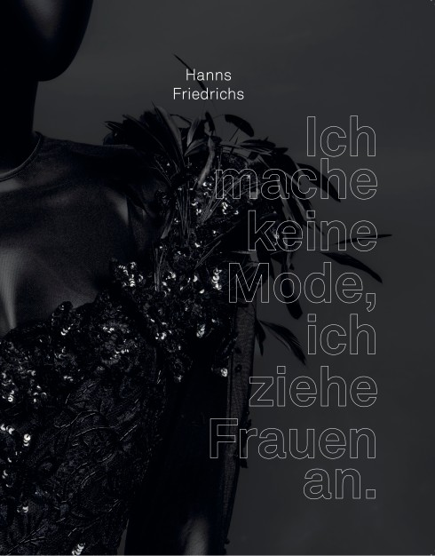

HANNS FRIEDRICHS
ICH MACHE KEINE MODE, ICH ZIEHE FRAUEN AN.
Hanns Friedrichs (1928-2012) war einer der wichtigsten Modeschöpfer Deutschlands und dennoch gehört er nicht zu den Namen, an die man denkt, wenn man sich für hochwertige Mode aus Deutschland interessiert. Seine Kundinnen sahen das anders. Sie entschieden sich statt für Haute Couture aus Paris, Mailand oder London bewusst für Modelle von Hanns Friedrichs.
ICH MACHE KEINE MODE, ICH ZIEHE FRAUEN AN.
In zweimal jährlich stattfindenden Modeschauen bot Hanns Friedrichs seinen Kundinnen, die zu einem großen Teil der westdeutschen Geschäfts- und Finanzwelt angehörten, Modelle, mit denen diese bei jedem Anlass gegenüber Haute Couture-Modellen der Pariser Modehäuser bestehen konnten. Sie waren und sind diejenigen, die die Haute Couture damals und heute mit ihren Schauen adressiert. Ihr Wunsch nach Diskretion verschaffte Hanns Friedrichs zwar dauerhaft treue Kundinnen, führte aber auch dazu, dass seine Modelle in der Öffentlichkeit kaum wahrgenommen wurden.
In mehr als fünf Jahrzehnten schrieb Hanns Friedrichs deutsche Modegeschichte. Schon 1949 eröffnete er sein Modellhaus in Hagen und bereits ab 1950 unterhielt er ein weiteres Atelier in Düsseldorf. Er kreierte in seinen Ateliers mit bis zu 60 Mitarbeiterinnen extravagante Modelle, die zu einem nicht geringen Teil Unikate blieben. Seine Entwürfe fanden Anklang bei selbstbewussten Frauen aus Gesellschaft, Wirtschaft und Finanzwelt. Hanns Friedrichs verstand es, sie mit seiner Schneiderkunst, Eleganz, vor allem aber mit seinem Motto „Ich mache keine Mode, ich ziehe Frauen an“ immer wieder aufs Neue zu gewinnen.
Die von Petra Holtmann und Rouven Lotz im Emil Schumacher Museum kuratierte Ausstellung zeigt vom 23. Oktober 2022 bis zum 13. März 2023 eine repräsentative Auswahl von Kostümen, Kleidern, festlicher Abendgarderobe bis hin zu Brautkleidern aus Privatbesitz. Mit rund 100 Modellen aus mehr als fünf Jahrzehnten bietet die Schau auf 500 Quadratmetern Ausstellungsfläche – dank der Unterstützung ehemaliger Mitarbeiterinnen und zahlreicher Kundinnen – erstmals einen repräsentativen Überblick seines Werkes.
Hg.: Rouven Lotz
Vorwort von Rouven Lotz und einem Beitrag von Petra Holtmann
184 Seiten, rd. 220 Abbildungen,
Hardcover, € 30,-
ISBN 978-3-942184-74-8
erhältlich unter info@esmh.de .